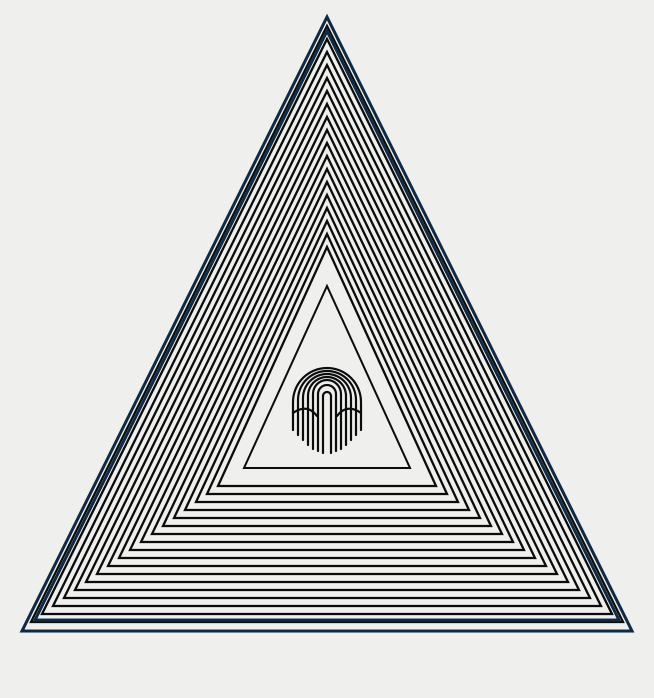

SR / 001
Theoretical & Computational Medicine
An epistemic layer between evidence and scientific action: typed claims, counterfactuals, experiment selection, provenance, and inferential audit.

SANGHA builds research systems that connect heterogeneous evidence to explicit representations, executable counterfactuals, discriminating experiments, and auditable scientific action.
An epistemic layer between evidence and scientific action: typed claims, counterfactuals, experiment selection, provenance, and inferential audit.
Cross-scale structure for mapping trait architecture, constraint, compensation, and causal support across genomic representations.
Directed physiological deformation across cohorts and disease stages, compiled toward experiments with lower expected regret.